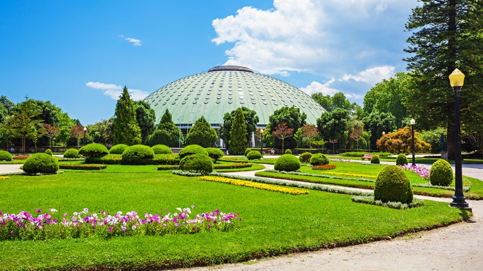
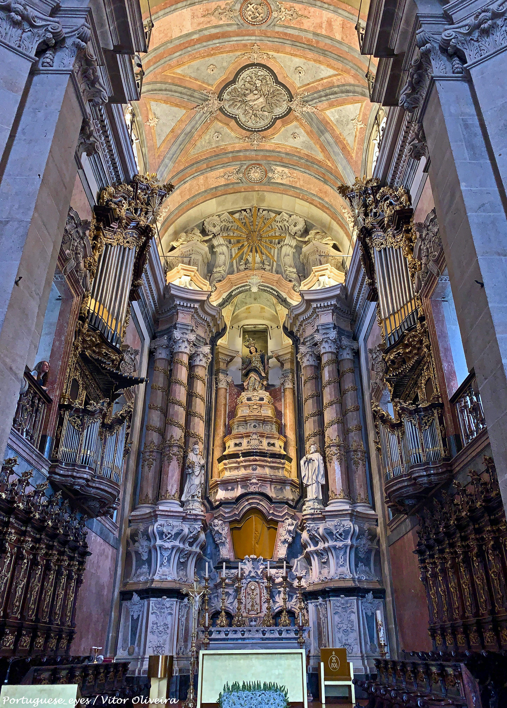
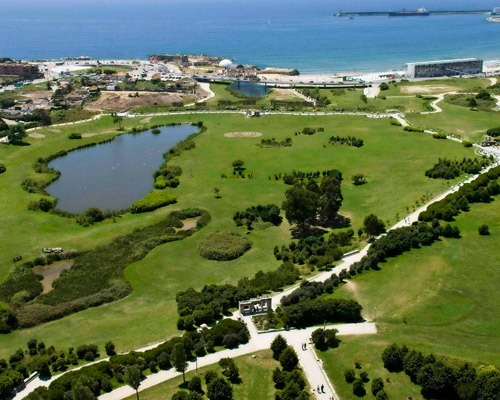
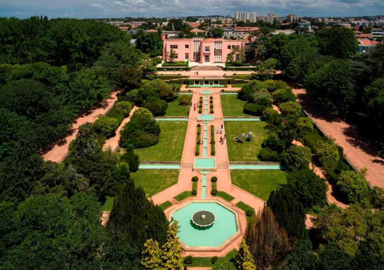
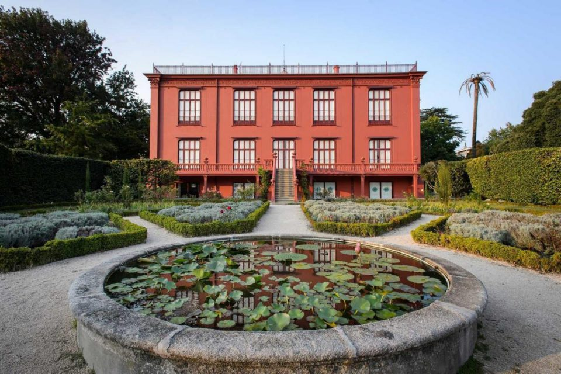

Most famous places

Casa da Música
Casa da Música is a concert hall, located in Praça de Mouzinho
de Albuquerque.

Palácio de Cristal
The Crystal Palace Gardens are a set of spaces greens with
stunning panoramic views.

Igreja dos Clérigos
It is considered the architectural postcard of the city of
Porto, it is a historic Portuguese monument.

Parque da Cidade
It is the largest urban park in the country, with an area that
extends to the Atlantic Ocean.

Serralves
It is a cultural institution with a contemporary vision of Art
and Landscape.

Jardim Botânico
The Porto Botanical Garden is located in the gardens of Quinta
do Campo Alegre.